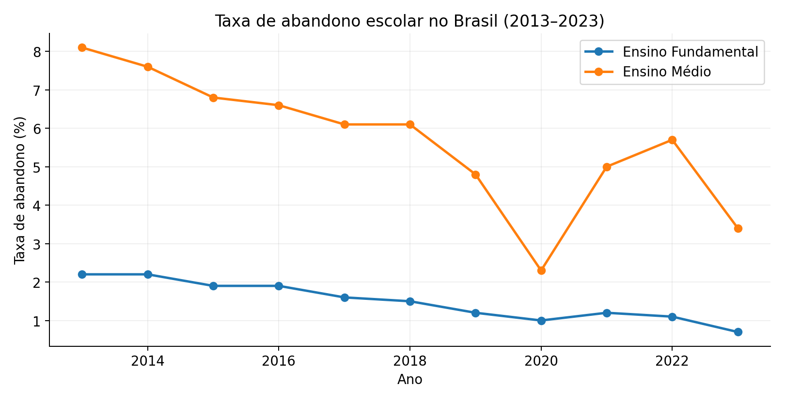
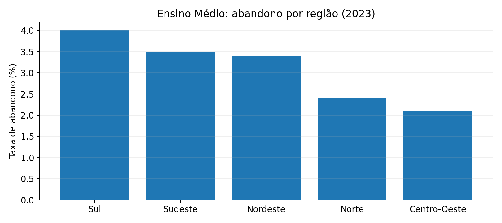

Abandono escolar e renda média no Brasil: análise exploratória de 2013 a 2023
Python Dados abertos FAIR Análise estatísticaEste estudo examina a evolução das taxas de abandono escolar no Brasil entre 2013 e 2023 e sua associação descritiva com o indicador de renda média disponível em uma base pública compartilhada no Kaggle. A investigação utiliza Python e pandas para importar, verificar e padronizar 90.160 registros, preservando valores ausentes sem imputação arbitrária. Para evitar a contagem repetida de agregações geográficas e administrativas, a análise temporal nacional considera exclusivamente as observações identificadas como Brasil, localização Total e dependência administrativa Total. Os resultados mostram redução da taxa de abandono no Ensino Fundamental de 2,2% para 0,7% e no Ensino Médio de 8,1% para 3,4% no período. Apesar dessa tendência geral, o Ensino Médio apresenta oscilações relevantes, especialmente em torno de 2020 e 2021. A associação entre abandono e renda é descrita por correlação, sem interpretação causal, pois fatores socioeconômicos e diferenças metodológicas podem influenciar os indicadores. O projeto disponibiliza código reproduzível, dicionário de dados, arquivos em formatos abertos e visualizações estáticas e interativas, alinhando a documentação aos princípios FAIR. As limitações incluem valores ausentes e ausência de confirmação sobre a unidade e a comparabilidade temporal da renda.
Palavras-chave: Abandono escolar; Renda média; Python; Análise exploratória; FAIR.1. Introdução
O abandono escolar representa um desafio para a permanência dos estudantes na educação básica. Investigar sua evolução e sua possível associação com condições econômicas permite identificar padrões relevantes, sem pressupor relações de causa e efeito. O presente trabalho examina dados anuais entre 2013 e 2023, com recortes por etapa de ensino e região.
RQ1: Como evoluíram as taxas nacionais de abandono no Ensino Fundamental e no Ensino Médio?
RQ2: Quais diferenças regionais são observadas no Ensino Médio em 2023?
RQ3: Qual é a associação descritiva entre a renda média informada e a taxa de abandono nacional?
2. Metodologia e pipeline de dados
O conjunto fornecido contém 90.160 linhas, referentes a anos, unidades geográficas, localização, dependência administrativa e grupos escolares. A fonte é um dataset hospedado no Kaggle . A análise utiliza o arquivo CSV original, leitura UTF-8, conversão explícita de tipos e exportação em CSV comprimido. Há 8.048 valores ausentes em Taxa_Abandono (8,93% das linhas), preservados como nulos. Não se atribui zero a dados ausentes.
Para a série nacional, filtraram-se: Unidade_Geografica = Brasil, Localizacao = Total, Dependencia_Administrativa = Total e os grupos Ensino Fundamental e Ensino Médio. Isso evita misturar totais com séries estaduais e subgrupos. A renda é tratada como indicador fornecido, pois sua unidade e correção inflacionária não foram verificadas.
import pandas as pd
df = pd.read_csv(
"data/raw/AbandonoEscolar_RendaMedia_2013_2023.csv"
)
df["Taxa_Abandono"] = pd.to_numeric(
df["Taxa_Abandono"],
errors="coerce"
)
df.to_csv(
"data/processed/dados_limpos.csv.gz",
index=False,
compression="gzip"
)3. Resultados e discussão
RQ1 — Evolução temporal

No Ensino Fundamental, a taxa passou de 2,2% (2013) para 0,7% (2023), redução de 1,5 ponto percentual. No Ensino Médio, caiu de 8,1% para 3,4%, redução de 4,7 pontos percentuais. A taxa do Ensino Médio permaneceu superior à do Fundamental em todos os anos analisados. Em 2020, o Ensino Médio registrou 2,3%, seguido de 5,0% em 2021. Esses movimentos devem ser interpretados com cautela, especialmente diante de possíveis mudanças de contexto e mensuração.
RQ2 — Diferenças regionais

| Região | Abandono no Ensino Médio (2023) |
|---|---|
| Sul | 4,0% |
| Sudeste | 3,5% |
| Nordeste | 3,4% |
| Norte | 2,4% |
| Centro-Oeste | 2,1% |
As taxas regionais não devem ser interpretadas como efeitos isolados da renda. Diferenças de composição, acesso e condições educacionais também podem influenciar os resultados.
RQ3 — Associação com renda média
A correlação de Pearson entre renda média e taxa de abandono na série nacional anual foi de -0,067 para o Ensino Fundamental e -0,373 para o Ensino Médio, considerando 11 observações anuais por etapa. Essas correlações são exploratórias, sensíveis ao tamanho reduzido da amostra, a tendências temporais e à definição do indicador de renda. Não demonstram que alterações de renda causem mudanças no abandono escolar.
4. Conclusão
Os dados mostram redução do abandono escolar nacional de 2013 a 2023 nas duas etapas agregadas, com taxas persistentemente maiores no Ensino Médio. Há diferenças regionais em 2023 e a associação com renda não permite inferência causal. As limitações incluem dados ausentes, agregações sobrepostas e incerteza sobre a definição e comparabilidade temporal da renda. Estudos futuros poderão integrar indicadores oficiais adicionais, pesos de matrículas e modelos que considerem fatores regionais e temporais.
5. Disponibilidade dos dados e princípios FAIR
Reprodução do projeto
Para reproduzir a análise, clone o repositório e instale as dependências:
git clone https://github.com/thomasandrew/abandono-escolar-renda-brasil.git
cd abandono-escolar-renda-brasil
python -m venv .venv
pip install -r requirements.txt
python -m src.etlO código-fonte, os notebooks, os dados processados e a documentação estão organizados no repositório:
GitHub — Abandono escolar e renda média no Brasil
6. Referências
WILKINSON, M. D. et al. The FAIR Guiding Principles for scientific data management and stewardship. Scientific Data, v. 3, 2016.
McKINNEY, Wes. Python for Data Analysis. 3. ed. O'Reilly Media, 2022.
PANDAS. Documentation. Disponível em: https://pandas.pydata.org/docs/ .
KAGGLE. Taxa de abandono escolar por renda média no Brasil. Disponível em: Dataset no Kaggle . Acesso em: 15 nov. 2026.